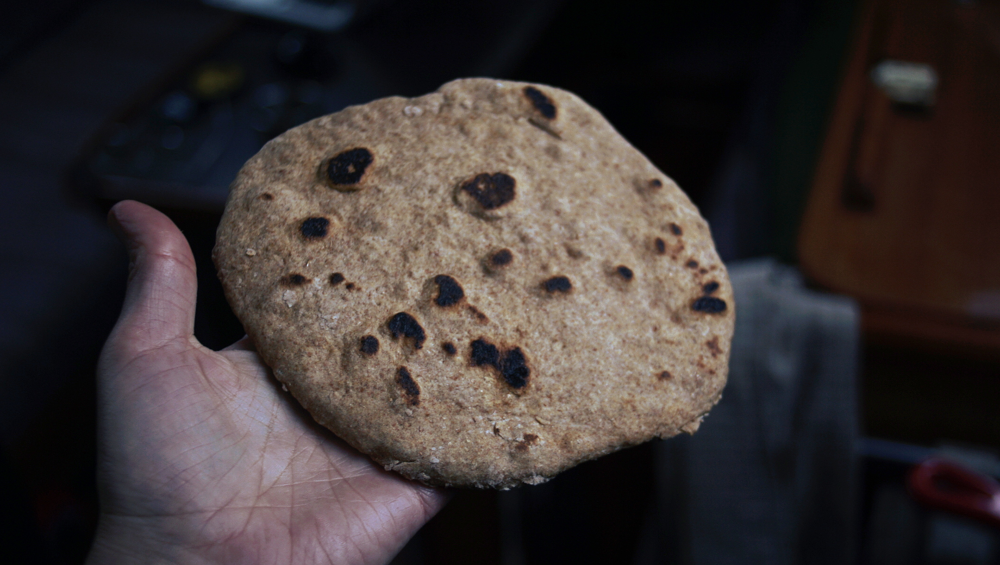

quick flat bread
8 small — 15 minutes
A quick no-yeast flat bread recipe, ideal when you want bread but don't want to wait. The flat bread is ready in under 45 minutes (includes resting time), and it's possible to prepare under 15 minutes — I do this a lot — if necessary (without the resting time).
Allowing the dough to relax after kneading makes it easier to work with, but if you skip that step it's still possible to roll it out, it'll just be a bit harder to do.
Substitutions:
Flour: Switching whole wheat flour for spelt, or all-purpose won't affect the dough.
Fat: Fat is necessary in this recipe, it helps to create a smooth, rich and pliable dough. Using other types of oil, like canola or sunflower oil, is fine. It's possible to use vegan butter, but it'll have to be softened and mixed in with other liquids first. If using vegan butter, measure out 50 g.
Liquid: For an even richer, and even MORE pliable dough, substitute water for plant milk. I recommend using soy, as it is richer than rice or oat milk. On the boat, I tend not to use milk because I rarely keep any (lacking a fridge).
Add-ins: I sometimes like to add seeds, like sesame, flax or sunflower, to my breads. Add the seeds after adding water, folding them into the dough.
Sourdough discard: to make this recipe with sourdough discard, measure 190 g (1 1/4 cups) of whole wheat flour and 113 g (1/2 cup) of the discard. You'll have to reduce the water, depending on the hydration level of your starter. I only added 130 ml of water instead of the full 180 ml. The sourdough won't provide much leavening or taste, this is just a way to add extra nutrition and to use discard.
 whole wheat flour 225 g
whole wheat flour 225 g salt 2.5 g
salt 2.5 g olive oil 60 ml
olive oil 60 ml water 180 ml
water 180 ml
bread mix
- In a bowl, measure 225 g (2 cups) of whole wheat flour, mix into a bowl with 2.5 g (1/2 tsp) of salt, 45 ml (3 tbsp) of olive oil and 180 ml (3/4 cup) of water.
- Knead until smooth and not sticky, add extra flour if too wet, and extra water if too dry. Cover dough, and it rest for 30 minutes. If you do this, the dough will be easier to work with. (You can skip the resting period, it'll just be a tiny bit harder to roll.)
- Cut the dough into 8 even pieces. Roll out into thin circles.
- Heat a cast-iron pan at medium heat, and add 15 ml (1 tbsp) of olive oil. When oil is hot, add one flat bread. Bubbles will form on the surface. Cook on each side for a minute or so. The edges will puff up and darken, giving a good indication that it's ready to flip.
- When flat bread is thoroughly cooked, transfer to plate and cover with a damp towel (to keep moist). Cook the rest of the flat breads.